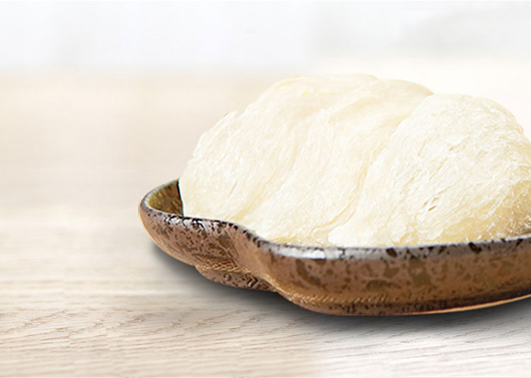
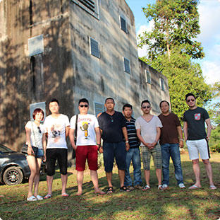

优产地 好燕窝
OPTIMAL ORIGIN GOOD BIRD'S NEST

项 目 概 述
燕窝作为马来西亚支柱产业，近年来发展迅速。三十六燕马来西亚千屋计划是深圳三十六燕品牌管理有限公司在山打根哥曼东100公里范围内投资建造新型环保燕屋进行引燕，并由三十六燕负责燕屋日常管理、燕窝销售等
燕 屋 概 述
人工养燕业起源于上世纪七十年代，最早见于马来西亚。当初散燕在闹市的废弃屋里或在民居家中筑巢起窝，后来聪明的华人琢磨琢磨着便买下这些房屋改装成“燕屋” ，当时仅靠“守株待兔” “自投落网”荻得燕窝，产量全凭运气。
产 地 概 述
马来西亚联邦（Mhasaysia）的沙巴州山打根（Sandakan）地区（山打根网址http://baike.so.com/doc/6079831.html） 。燕窝产于东南亚国家，主要分布在印尼和马来西亚，而印尼就占居了世界总产量百分之七十。
产 地 概 述
马来西亚联邦（Mhasaysia）的沙巴州山打根（Sandakan）地区（山打根网址http://baike.so.com/doc/6079831.html） 。燕窝产于东南亚国家，主要分布在印尼和马来西亚，而印尼就占居了世界总产量百分之七十。
|
首页 |
产品中心 |

新闻中心 |
关于我们 |